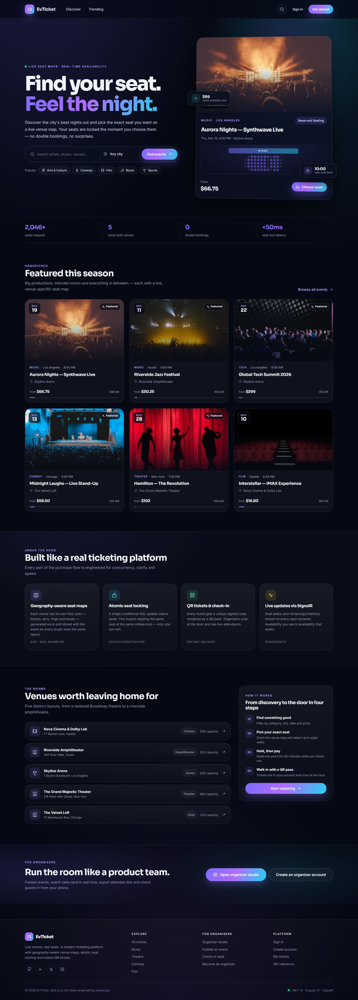
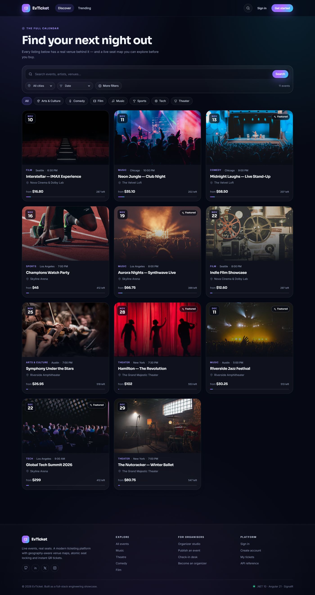
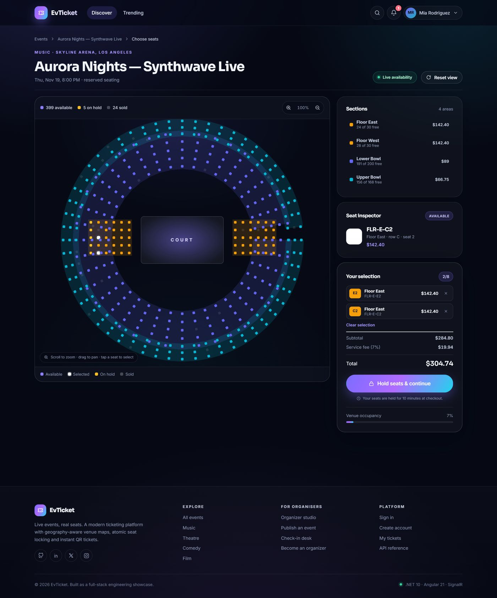
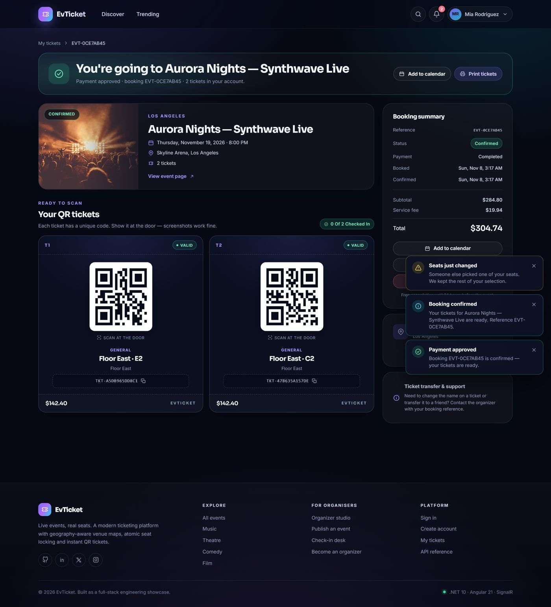
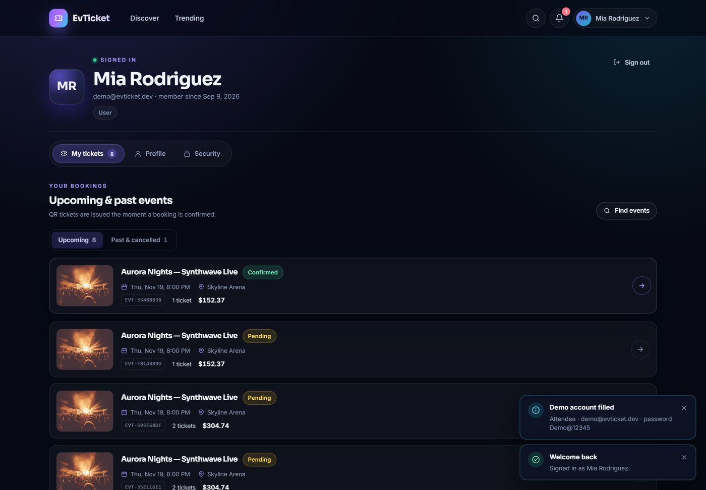
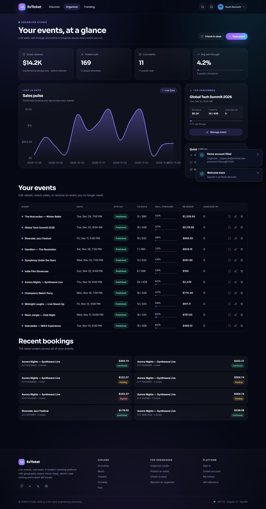
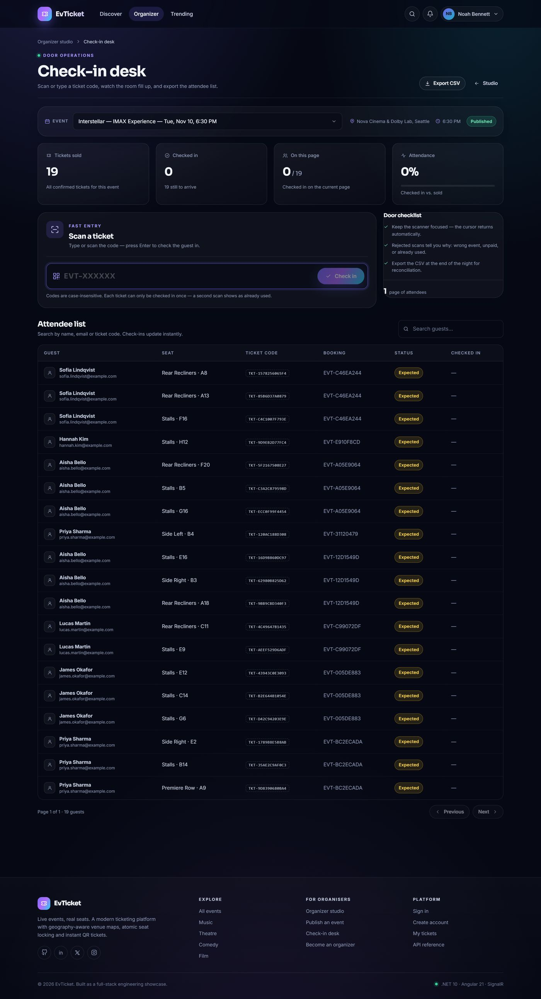
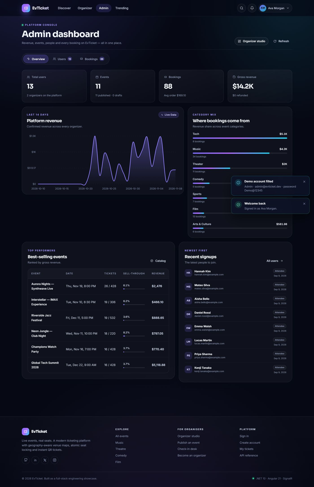

Exact-seat venue maps
Interactive SVG seating plans with zoom, pan, section filtering, hover previews and live availability per seat.
A production-shaped ticketing platform: browse events, pick real seats on a venue map, pay, and walk in with a QR ticket. Organizers get a studio for events and check-ins; admins get a platform console. The engineering centrepiece is an atomic seat hold that closes the race window without distributed locks.
Guest booking, organizer operations and platform administration share one API, one domain model and one permission system.
Interactive SVG seating plans with zoom, pan, section filtering, hover previews and live availability per seat.
A single conditional UPDATE claims a seat. No distributed lock and no race window — the database decides the winner.
Holds, releases and notifications stream to every open browser, so a seat disappears from other maps immediately.
Ten-minute hold timer, card validation, demo payments and a unique QR code per ticket that is scannable once.
Revenue, tickets sold, sell-through, attendance and a 14-day sales chart, plus event creation and publishing.
Large code entry with success and rejection feedback, attendee search and CSV export for the door team.
Platform revenue and category mix, top events, recent signups, user roles, all bookings and CSV exports.
ASP.NET Core Identity with JWT access tokens and rotating, SHA-256-hashed refresh tokens that detect reuse.
Background expiry worker, rate limiting, health checks, Problem Details, response compression and Scalar API docs.
Real captures from the running application, taken from the project's documented screenshot set.








Everything else follows from getting concurrency, identity and money right.
EvTicket is a full-stack application, so this tour uses the screenshots kept in the repository's
docs/screenshots folder rather than an embedded instance. The README documents the local run steps,
seeded demo accounts, demo card numbers and a reset path that recreates the database from scratch.